Volunteer Science will collect your data once ever 24 hours if you donate it. These permissions are turned off by default, and you may revoke them at any time. If a permission is revoked, the corresponding data will no longer be collected, but existing information will not be deleted.
Enter your email address here. We'll send you information about our latest experiments, and we'll let you know how you can help our researchers make exciting discoveries!
Snatcher is an extension for Google Chrome designed to help you see the effects of price personalization. What is price personalization, you ask? On the surface, it's a pretty simple concept. We believe that some websites, like Amazon and Priceline, show different prices to different users for the same product. In diplomatic terms, the prices you see are "personalized" to you. What we as scientists wish to know is the extent to which this practice pervades e-commerce, and what factors services use to determine the prices you'll see when you visit their website. Let's see how it works.
When you visit one of our Supported Sites and perform a search, a dialog will appear.
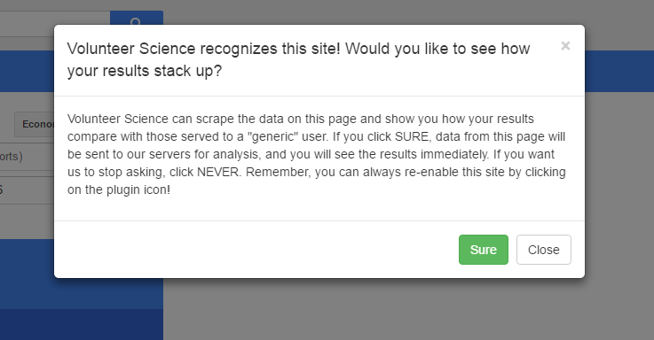
If you click Close, then nothing will happen and you can browse as usual. If you click Sure, Snatcher will extract prices and a variety of other metadata from the page and send it to a Volunteer Science server. Once the server gets the information, it will visit the same page and repeat your search. While all this is happening, you'll see a spinning Volunteer Science logo that looks like this:
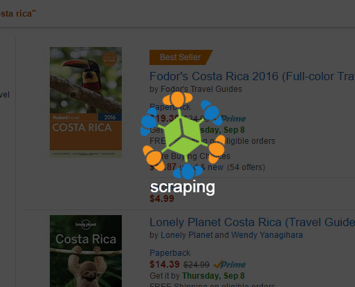
Once the server is done, it will send the prices it received back to you, and then it will merge than information seamlessly into your page. Here are some things you're likely to see:
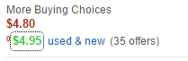
The server's price was higher than yours. Lucky you!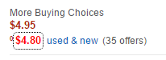
The server's price was lower than yours. What gives?!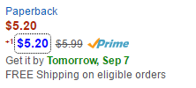
The server's price was the same as yours. Most of the time, this is what should happen.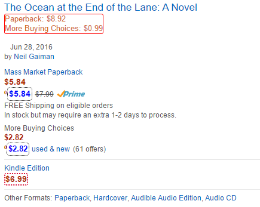
Extra variants on the same product were shown to the server, but not to you. Here, the server saw the paperback edition of the book, while you saw the Kindle Edition.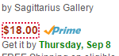
Only you saw this price. The server didn't.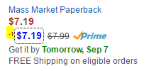
The product was featured 1 place higher (ie more prominently) in your results.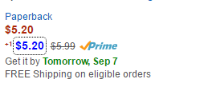
The product was featured 1 place higher (ie more prominently) in your results.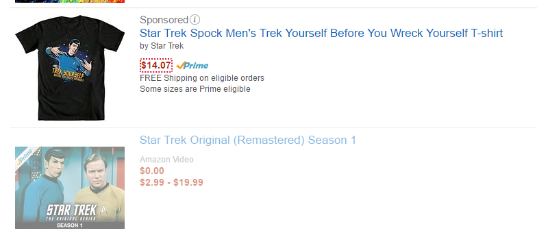
Products that only the server saw are shown semi-transparent below the main results. Often, these products may be found by clicking through to the second or third page of results.You can enable or disable a supported site by clicking the Snatcher extension icon on the Chrome menu bar and toggling the button. If you disable a site, the extension will ignore it entirely unless you re-enable, allowing you to use it as normal.
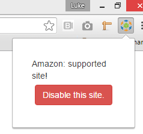
If you visit another page on the same site without refreshing, you will not be prompted to perform another comparsion. If you want to run Snatcher again, click the extension icon on the fresh results page and hit the Compare Prices button.
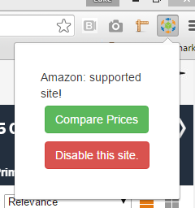
Snatcher is designed to make adding scrapers easy. We will be working in the coming months to add support for popular sites. If you'd like to help us out, you can build your own scraper using our sandbox. Building a crude scraper with the sandbox doesn't require any coding experience; all you have to do is point and click. If you're a developer, the automated tool may be a good jumping-off point. In most cases, it's easy to refine the auto-generated scraper such that it works nearly perfectly. Let's take a look.
IMPORTANT NOTE: THE SANDBOX IS A WORK IN PROGRESS AND MAY NOT WORK CORRECTLY. Until the gallery is complete, you may submit your scraper by saving it, going to the Log tab, and copying the text into an email to HORGAN.L@HUSKY.NEU.EDU. You may also submit bug reports and other grievances to that address.
To get started, visit the site you'd like to build a parser for, do a search, and open Chrome's devtools by pressing CTRL+SHIFT+J. Click the Volunteer Science tab. In this tutorial, we're going to visit Staples.com and search for printers.
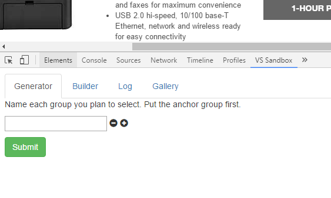
For this site, there are four types of elements that I want to select: product titles, product prices, product images, and product SKUs. The titles will server as my anchor group because there is only one title per item, which means Snatcher shouldn't have too much trouble picking them out. Picking a good anchor group will make the tool work better. Note that the price group must be called price. The anchor group doesn't have to be called anchor, but it's a good idea to use that name anyway. In the image below, I've added the four groups by clicking the small black plus button next to each input and typing their names.
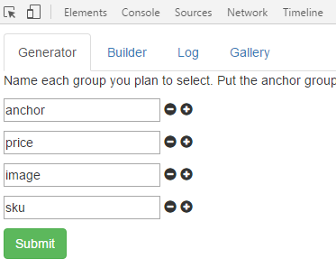
When you click Submit, you will be prompted to SELECT every element of every group you identified, one element at a time. To make this easier, Snatcher removes all but 15 listings from the page. It is important that you accurately select everything you've promised to, or else Snatcher is more likely to get confused and die. All you have to do to select an element is mouse over it and click. Note that when you leave the sanbox by switiching tabs or closing DevTools all together, this click and select functionality will disappear, allowing you to use the page as before. Here, Snatcher has prompted me to select all anchor elements, and I have complied.
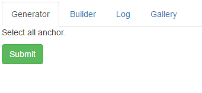
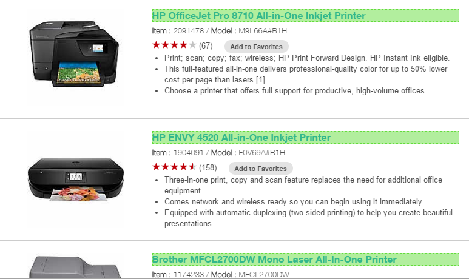
Once you've finished selecting the last element group and you submit it, Snatcher will attemp to build a scraper for it. Give it some time; it shouldn't take too long. It will log its progress and let you know if something goes wrong.
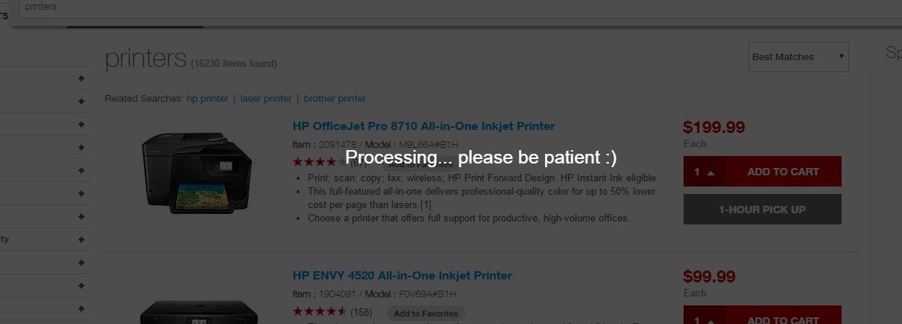
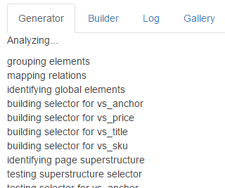
If everything goes well, the finished scraper will appear in the builder tab. If you're not a developer, you don't have to worry too much about that scary looking graphic, but it really isn't as bad as it looks. All of its components are explained in this PDF (which doesn't exist yet, but will soon!). Using the four buttons, which are highlighted in yellow at the the top, you can save your scraper, load a saved scraper, merge two scrapers, and run your scraper to see what it extracts from the page. Saving and Opening are pretty self-explanatory, but we'll go over Merging and Running in more detail.
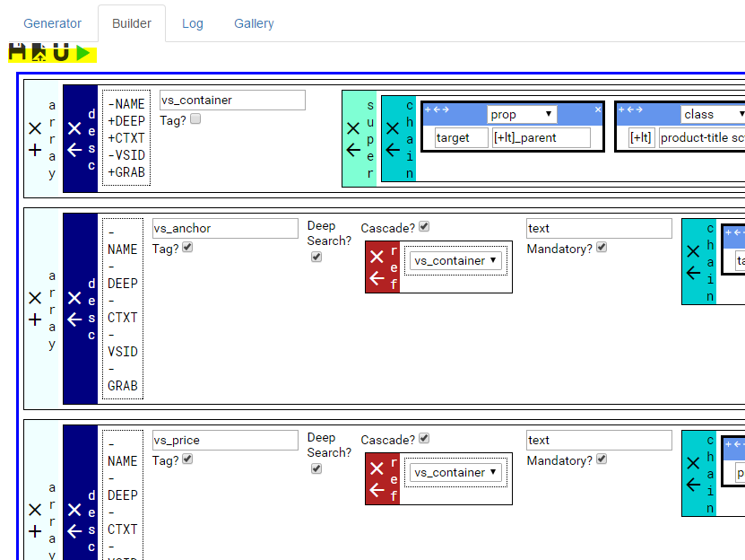
The auto-generated scrapers have a tendency to overfit the data. In the printer example, for instance, Snatcher saw that every produt title contained the word printer, so it decided all product listings on Staples.com probably use this word. To fix that, save the printer scraper, open a new tab (or restart DevTools), and run a new search for something else. Repeat all the previous steps and generate a new scraper. Save that scraper and then click the U-shaped magnet. Select two or more scrapers you'd like to merge and then click the checkbox button. The merged scraper should appear immediately. Here, I ran a search for office chairs. When I merged the office chair scraper with the printer selector, Snatcher took what was common between them and left out the rest, thereby solving the overfit problem.
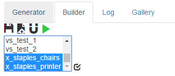
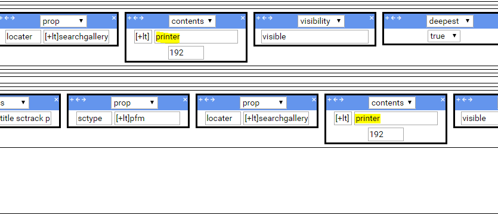
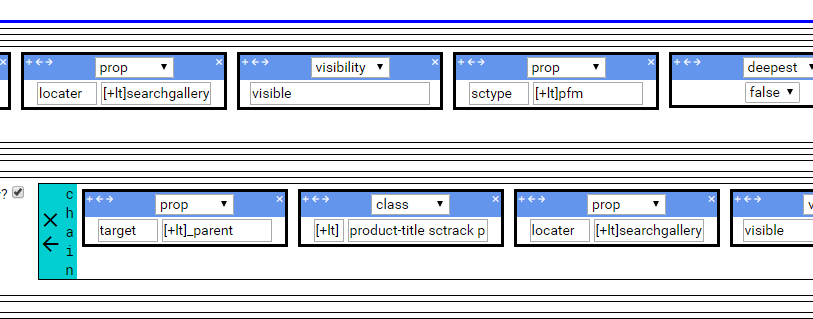
To see if your selector works, click the green Run button. The scraped information will be written to the Log tab as a stringified JSON array. Prettier printing is under development. You can clear the log by clicking the round X button. Note that when you Save a scraper, the stringified scraper is also printed to the log tab. You may submit any such scrapers to HORGAN.L@HUSKY.NEU.EDU for review.
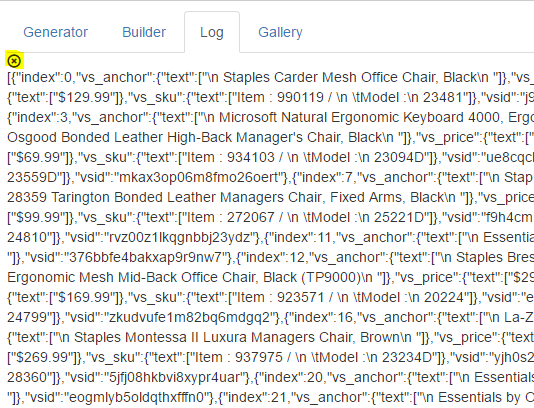